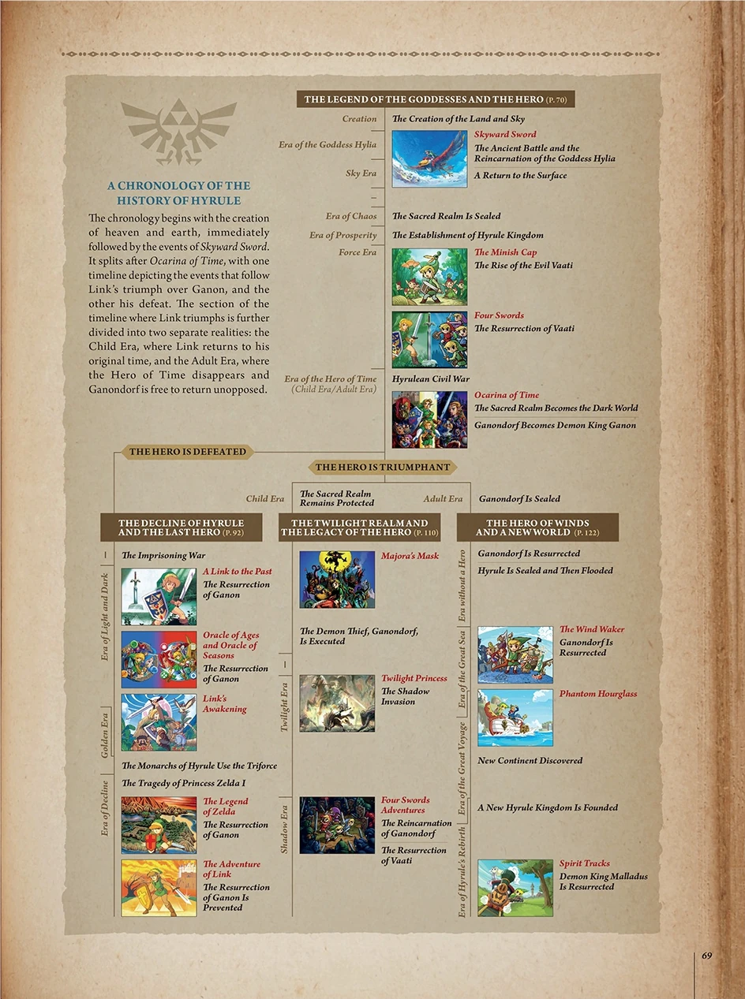
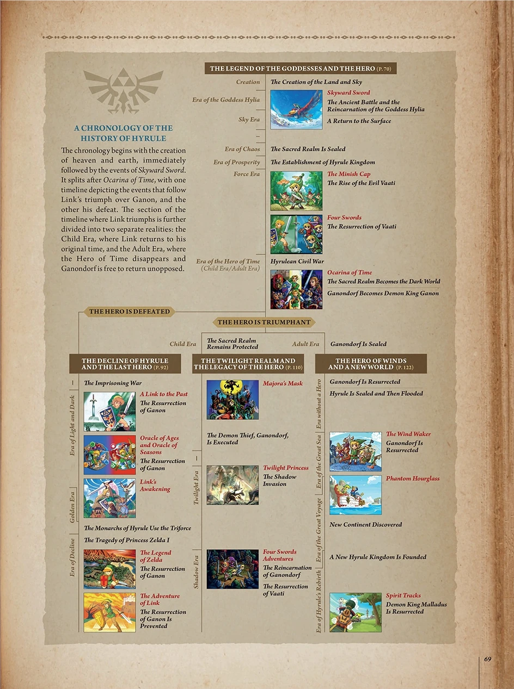

About
The official Zelda timeline was revealed in the Hyrule Historia, splitting into three distinct branches. Though debated by fans, it provides a fascinating framework for understanding how each game connects within the series.

The official Zelda timeline was revealed in the Hyrule Historia, splitting into three distinct branches. Though debated by fans, it provides a fascinating framework for understanding how each game connects within the series.
